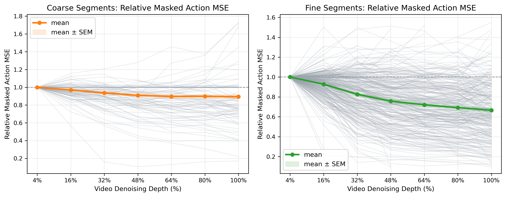
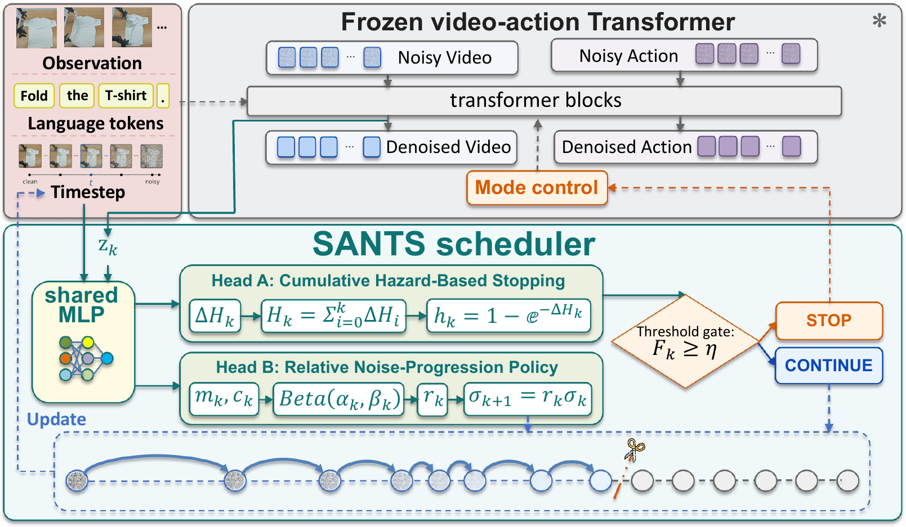
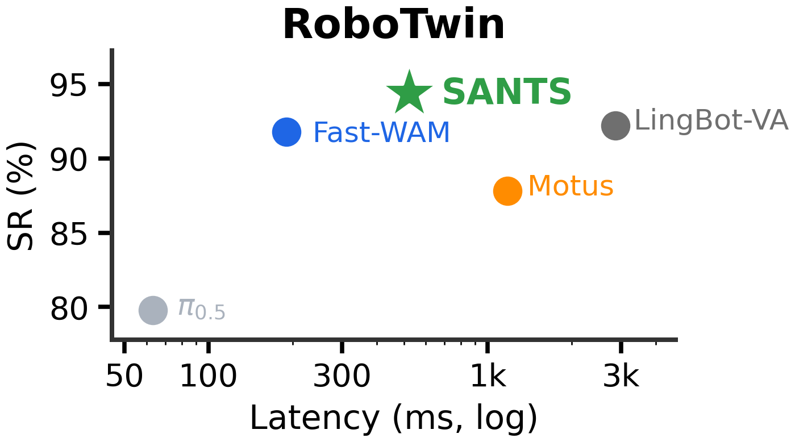
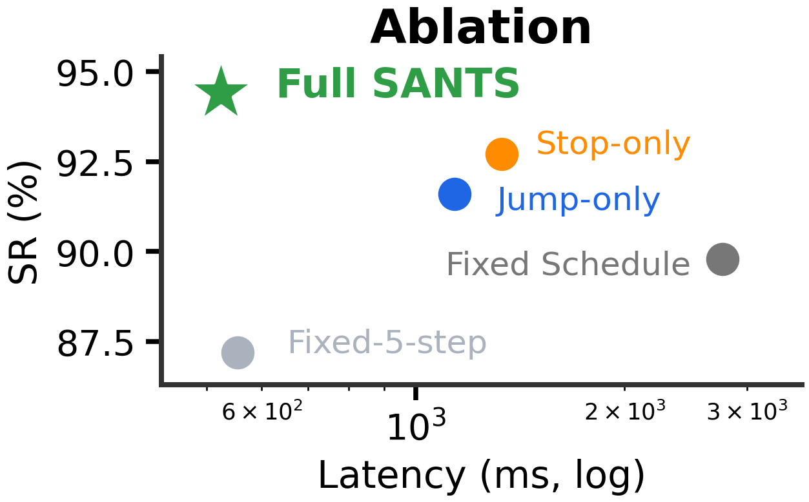
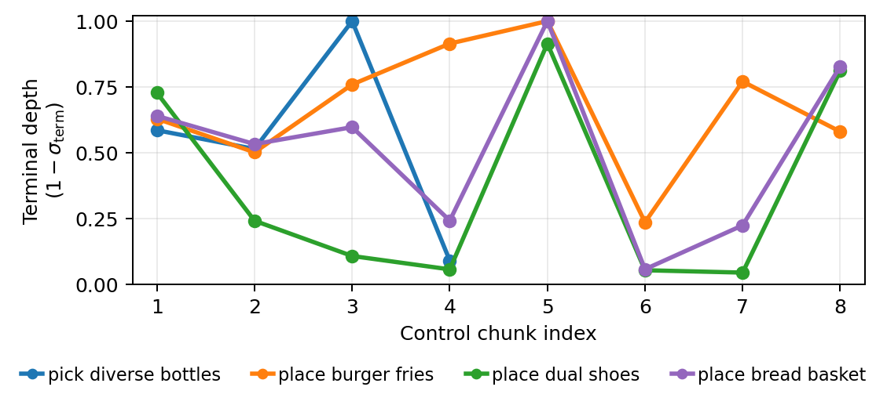

Problem
Full video denoising is expensive, and the final clean video is not always the best condition for action generation.
World Action Models / Robot Learning
A State-Adaptive Scheduler for World Action Models
World Action Models do not always need a fully denoised future. SANTS selects the action-useful intermediate video state at inference time, preserving future reasoning while removing redundant video denoising.
One-minute summary
Full video denoising is expensive, and the final clean video is not always the best condition for action generation.
Action utility along the video noise trajectory is state dependent: coarse motion often needs less refinement than contact-rich manipulation.
SANTS learns when to stop denoising and how far to jump if more future evolution remains useful.

Motivation
Controlled depth scans show that video refinement can reduce action error, but the gain saturates and sometimes reverses. Coarse phases often obtain enough action cues after shallow denoising, while fine contact and alignment phases benefit from deeper future evolution.
This turns WAM inference into a state-dependent selection problem: choose the intermediate video representation that helps action generation, rather than always waiting for the fully denoised endpoint.

Method
SANTS attaches a lightweight scheduler to a frozen video-action diffusion policy. At each video decision point, it reads the current video-state representation and noise level, then predicts both stopping evidence and a relative noise-progression ratio.

Use the pooled video representation and current noise level as scheduler state.
Accumulate hazard evidence to decide whether the current intermediate video state is sufficient.
If continuing, predict a relative progression ratio instead of following a fixed denoising grid.
Pass the selected terminal video representation to the frozen action branch.
Results

SANTS keeps strong WAM-style future reasoning while removing much of the video-denoising cost.
94.4% overall success at 523.7 ms average inference latency across RoboTwin tasks.
Adaptive stop and adaptive jump are complementary; using both gives the strongest success-latency tradeoff.
| Setting | Success | Avg. latency | Message |
|---|---|---|---|
| Full-denoising WAM | 92.2% | 2868.4 ms | Accurate but slow |
| SANTS | 94.4% | 523.7 ms | Best success with large average latency reduction |

Robot evaluation
Across bimanual manipulation and UR10 kitchen tasks, SANTS reaches 73.1% mean success at 581.3 ms average policy latency computed over all seven tasks by selecting intermediate future-video states without running full video denoising at every decision.
AgileX dual-arm
AgileX dual-arm
AgileX dual-arm
AgileX dual-arm
UR10 kitchen
UR10 kitchen
UR10 kitchen
What SANTS learns
The scheduler does not simply run fewer steps everywhere. It allocates larger video-denoising budgets to contact, alignment, and insertion states while stopping earlier when the action intent is already clear.

@misc{sun2026santsstateadaptiveschedulerworld,
title={SANTS: A State-Adaptive Scheduler for World Action Models},
author={Yirui Sun and Guangyu Zhuge and Keliang Liu and Jie Gu and Xinyu Bing and Zhongxue Gan and Chunxu Tian},
year={2026},
eprint={2605.27947},
archivePrefix={arXiv},
primaryClass={cs.RO},
url={https://arxiv.org/abs/2605.27947},
}